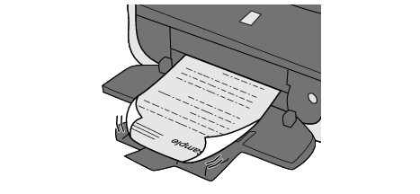

Printed Paper Has Ink Blots
Printed Paper Has Ink Blots

Printed Paper Curls

-
Check 1: Did you confirm the paper and print quality settings?
-
Check 2: If the intensity is set high, reduce the Intensity setting in the printer driver and try printing again.
If you are using plain paper to print images with high intensity, the paper may absorb too much ink and become wavy, causing paper abrasion.
-
When printing from your computer
-
When copying
-
-
Check 3: Is Photo Paper used for printing photographs?
When printing data with high color saturation such as photographs or images in deep color, we recommend using Photo Paper Plus Glossy II or other Canon speciality paper.